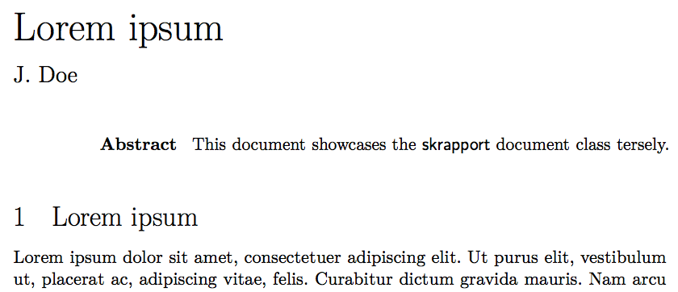
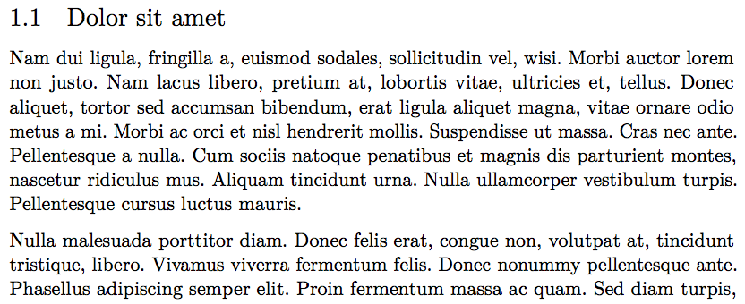

Other LaTeX packages I maintain include chs-msc-thesis, skmath, skdoc and download.
The skrapport document class is an attempt to provide a good-looking, compact alternative to the standard article class. It is designed to be fully compatible with the article class, meaning you should be able to simply replace the \documentclass declaration in the preamble of your documents should you decide to use this class instead.
Most notably it defines the \maketitle command to typeset your title in a more compact manner. As shown by the image below, the title and author name is left-justified, immediately followed by the abstract (if available). Note also that section titles aren’t boldface by default (although there is an option controlling this).

The class also loads some packages by default; hyperref and babel being the most notable ones. By default, babel is loaded with swedish settings, but this can be changed to english by providing an option — this is because the class is designed for use at Chalmers, where the only languages used are swedish and english; swedish being used in most undergraduate courses. See the package documentation for more information.
Additionally, the package sets up LaTeX with paragraph spacing, much like the parskip package, as shown below. This is because short paragraphs are likely to be present in short reports, and these look much better with spacing rather than indentation.
